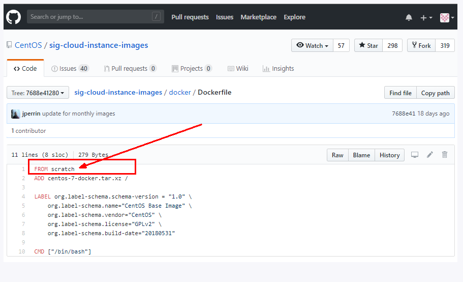

DockerFile
什么是DockerFile
- 手动编写一个dockerfile文件， 必须符合file 的规范
- 有这个文件后， 直接docker build命令执行 获得一个自定义的镜像
- run
类似： maven build jar java -jar ms....
定义
DockerFile 是用来构建Docker镜像的构建文件， 是由一系列命令和参数构成的脚本
构建三步骤：
- 编写Dockerfile文件
- docker build
- docker run
文件什么样？
以centos为例： https://hub.docker.com/_centos/

DockerFile构建过程解析
DockerFile内容基础知识
1. 每条保留字指令都必须为大写字母 并且后面要跟随至少一个参数
2. 指令按照从上到下 顺序执行
3. # 表示注释
4. 每条指令都会创建一个新的镜像层，并对镜像进行提交
Docker执行DockerFile的大致流程
- docker从基础镜像运行一个容器
- 执行一条指令并对容器作出修改
- 执行类似docker commit 的操作提交一个新的镜像层
- docker 再基于刚提交的镜像运行一个容器
- 执行dockerfile 中的下一条指令直到所有的指令都执行完成
小总结
从应用软件的角度来看， DockerFile、Docker镜像与Docker容器分别代表软件的三个不同阶段
* Dockerfile 是软件的原材料
* Docker镜像是软件的交付品
* Docker容器则可以认为是软件的运行态
Dockerfile面向开发， Docker镜像成为交付标准， Docker容器则涉及部署与运维， 三者缺一不可， 合力充当Docker体系的基石。
1 Dockerfile 需要定义一个Dockerfile， Dockerfile定义了进程需要的一切东西。 Dockerfile涉及的内容包括执行代码或者是文件、环境变量、依赖包、运行时环境、动态链接库、操作系统的发行版、服务进程和内核进程(当应用进程需要和系统服务和内核进程打交道，这时需要考虑吧如何设计namespace的权限控制)等等；
- Docker镜像， 在用Dockerfile 定义一个文件之后， docker build会产生一个Docker镜像， 当运行Docker镜像时，会真正开始提供服务。
- Docker容器， 容器直接提供服务的。
DockerFile体系结构(保留字指令)
- FROM 基础镜像， 当前新镜像是基于哪个镜像的
- MAINTAINER 镜像维护者的姓名和邮箱地址
- RUN 容器构建时需要运行的命令
- EXPOSE 当前容器对外暴露出的端口
- WORKDIR 指定在创建容器后， 终端默认登陆进来的工作目录， 一个落脚点
ENV 用来在构建镜像过程中设置环境变量
ENV MY_PATH /usr/mytest
这个环境变量可以在后续的任何RUN指令中使用，这就如同在命令前面指定了环境变量前缀一样；
也可以在其它指令中直接使用这些环境变量，
比如：WORKDIR $MY_PATH
- ADD 将宿主机目录下的文件拷贝进镜像且ADD命令会自动处理URL和解压tar压缩包
- COPY 类似ADD，拷贝文件和目录到镜像中将从构建上下文目录中<源路径>的文件/目录复制到新的一层的镜像内的<目标路径>位置
- VOLUME 容器数据卷，用于数据保存和持久化工作
- CMD 指定一个容器启动时要运行的命令
- CMD 指令的格式和 RUN 相似 也是两种格式
- shell 格式： CMD <命令>
- exec 格式： CMD ["可执行文件", "参数1", "参数2"...]
- 参数列表格式： CMD ["参数1", "参数2"...]. 在指定了 ENTRYPOINT 指令后， 用CMD指定具体的参数
- DockerFile 中可以有多个cmd指令， 但只有最后一个生效， CMD 会被docker run 之后的参数替换
- CMD 指令的格式和 RUN 相似 也是两种格式
- ENTRYPOINT 指定一个容器启动时要运行的命令
- ENTRYPOINT 的目的和CMD一样，都是在指定容器启动程序以及参数
- ONBUILD 当构建一个被继承的DockerFile时运行命令， 父镜像在被子继承后父镜像的onbuild被触发
总结
docker file 案例
Base镜像(scratch)
Docker Hub中99%的镜像都是通过在base镜像中安装和配置需要的软件构建出来的

自定义镜像 centos
- 编写
- Hub默认centos镜像什么情况
- 初始centos运行该镜像时默认在/目录下
- 默认不支持vim编辑器
- 默认不支持ifconfig查看网络配置
- 准备编写Dockerfile文件
- mycentos内容Dockerfile
- FROM centos
- MAINTAINER liushuangdan@csm.com.cn
- ENV MYPATH /usr/local
- WORKDIR $MYPATH
- RUN yum -y install vim
- RUN yum -y install net-tools
- EXPOSE 80
- CMD echo $MYPATH
- CMD echo "success ---- ok"
- CMD /bin/bash
- Hub默认centos镜像什么情况
- 构建
- docker build -t 新镜像名字:TAG .
- 运行
- docker run -it 新镜像名字:TAG
- 列出镜像的变更历史
- docker history 镜像名
CMD/ENTRYPOINT 镜像案例
都是要指定一个容器启动时要运行的命令
CMD
- Dockerfile中可以又多个CMD命令，但是只有最后一个生效，CMD会被docker run 之后的参数替换
- Case tomcat 的讲解演示 docker run -it -p 8888:8080 tomcat ls -l
ENTRYPOINT
- docker run 之后的参数会被当做参数传递给ENTRYPOINT，之后形成新的命令组合
Case
- 制作CMD版可以查询IP信息的容器
FROM centos RUN yum install -y curl CMD [ "curl", "-s", "http://ip.cn" ] crul 命令解释
curl命令可以用来执行下载、发送各种HTTP请求，指定HTTP头部等操作。 如果系统没有curl可以使用yum install curl安装，也可以下载安装。 curl是将下载文件输出到stdout
- 制作CMD版可以查询IP信息的容器
使用命令：curl http://www.baidu.com
执行后，www.baidu.com的html就会显示在屏幕上了
这是最简单的使用方法。用这个命令获得了http://curl.haxx.se指向的页面，同样，如果这里的URL指向的是一个文件或者一幅图都可以直接下载到本地。如果下载的是HTML文档，那么缺省的将只显示文件头部，即HTML文档的header。要全部显示，请加参数 -i
问题 如果我们希望显示HTTP头信息，就需要加上-i参数
docker run myip -i 报错  why： 我们可以看到可执行文件找不到的报错，executable file not found。 之前我们说过，跟在镜像名后面的是 command，运行时会替换 CMD 的默认值。 因此这里的 -i 替换了原来的 CMD，而不是添加在原来的 curl -s http://ip.cn 后面。而 -i 根本不是命令，所以自然找不到。 那么如果我们希望加入 -i 这参数，我们就必须重新完整的输入这个命令： $ docker run myip curl -s http://ip.cn -i制作ENTRYPOINT 版查询IP信息的容器
FROM centos RUN yum install -y curl ENTRYPOINT [ "curl", "-s", "http://ip.cn" ]
自定义镜像Tomcat
- mkdir -p /zzyyuse/mydockerfile/tomcat9
- 在上述目录下touch.txt
- 将jdk和tomcat安装的压缩包拷贝进上一步目录
- apache-tomcat-9.0.8.tar.gz (cp /opt/apache-tomcat-9.0.8.tar.gz .)
- jdk-8u171-linux-x64.tar.gz (cp /opt/jdk-8u171-linux-x64.tar.gz .)
- 在/zzyyuse/mydockerfile/tomcat9目录下新建Dockerfile文件
FROM centos MAINTAINER zzyy<zzyybs@126.com> #把宿主机当前上下文的c.txt拷贝到容器/usr/local/路径下 COPY c.txt /usr/local/cincontainer.txt #把java与tomcat添加到容器中 ADD jdk-8u171-linux-x64.tar.gz /usr/local/ ADD apache-tomcat-9.0.8.tar.gz /usr/local/ #安装vim编辑器 RUN yum -y install vim #设置工作访问时候的WORKDIR路径，登录落脚点 ENV MYPATH /usr/local WORKDIR $MYPATH #配置java与tomcat环境变量 ENV JAVA_HOME /usr/local/jdk1.8.0_171 ENV CLASSPATH $JAVA_HOME/lib/dt.jar:$JAVA_HOME/lib/tools.jar ENV CATALINA_HOME /usr/local/apache-tomcat-9.0.8 ENV CATALINA_BASE /usr/local/apache-tomcat-9.0.8 ENV PATH $PATH:$JAVA_HOME/bin:$CATALINA_HOME/lib:$CATALINA_HOME/bin #容器运行时监听的端口 EXPOSE 8080 #启动时运行tomcat # ENTRYPOINT ["/usr/local/apache-tomcat-9.0.8/bin/startup.sh" ] # CMD ["/usr/local/apache-tomcat-9.0.8/bin/catalina.sh","run"] CMD /usr/local/apache-tomcat-9.0.8/bin/startup.sh && tail -F /usr/local/apache-tomcat-9.0.8/bin/logs/catalina.out - 构建docker build -t zzyytomcat9 .
- 构建完成
run
docker run -d -p 9080:8080 --name myt9 -v /zzyyuse/mydockerfile/tomcat9/test:/usr/local/apache-tomcat-9.0.8/webapps/test -v /zzyyuse/mydockerfile/tomcat9/tomcat9logs/:/usr/local/apache-tomcat-9.0.8/logs --privileged=true zzyytomcat9报错备注：
Docker挂载主机目录Docker访问出现cannot open directory .: Permission denied
解决办法：在挂载目录后多加一个--privileged=true参数即可
- 验证
结合前述的容器卷将测试的web服务test发布
- 总体概述

web.xml ```
<?xml version="1.0" encoding="UTF-8"?> <web-app xmlns:xsi="http://www.w3.org/2001/XMLSchema-instance" xmlns="http://java.sun.com/xml/ns/javaee" xsi:schemaLocation="http://java.sun.com/xml/ns/javaee http://java.sun.com/xml/ns/javaee/web-app_2_5.xsd" id="WebApp_ID" version="2.5">
- 总体概述
<display-name>test</display-name>
</web-app>
```
a.jsp
<%@ page language="java" contentType="text/html; charset=UTF-8" pageEncoding="UTF-8"%> <!DOCTYPE html PUBLIC "-//W3C//DTD HTML 4.01 Transitional//EN" "http://www.w3.org/TR/html4/loose.dtd"> <html> <head> <meta http-equiv="Content-Type" content="text/html; charset=UTF-8"> <title>Insert title here</title> </head> <body> -----------welcome------------ <%="i am in docker tomcat self "%> <br> <br> <% System.out.println("=============docker tomcat self");%> </body> </html>测试


总结